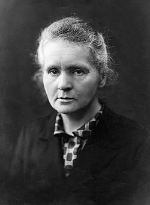

A Pioneer in the Science of Radioactivity

Marie Curie was a remarkable scientist whose curiosity and dedication changed the way people understood the natural world. Born in Warsaw, Poland, in 1867, she developed a strong passion for learning from an early age and later moved to Paris to pursue higher education.
In Paris, Curie studied physics and mathematics and devoted herself to scientific research. Her work on radioactivity became the central focus of her career. Alongside Pierre Curie, she carried out difficult experiments that eventually led to the discovery of the elements polonium and radium.
Curie's achievements were extraordinary for her time. In 1903, she became the first woman to receive a Nobel Prize when she shared the Nobel Prize in Physics with Pierre Curie and Henri Becquerel. In 1911, she received a second Nobel Prize, this time in Chemistry, for her research on radium and polonium.
Marie Curie's legacy continues to inspire scientists around the world. Her determination, commitment to research, and willingness to overcome challenges made her an important figure in the history of science. Her life remains an example of how curiosity and perseverance can lead to discoveries that benefit future generations.
Marie Curie was born in Warsaw, Poland, on November 7, 1867.
She moved to Paris to continue her studies and attended the University of Paris.
Marie and Pierre Curie announced the discovery of two new elements, polonium and radium.
Marie Curie shared the Nobel Prize in Physics with Pierre Curie and Henri Becquerel.
She received a second Nobel Prize for her research on radium and polonium.
Marie Curie died in France, leaving behind a lasting legacy in science and research.
“Nothing in life is to be feared, it is only to be understood. Now is the time to understand more, so that we may fear less.”
— Marie Curie